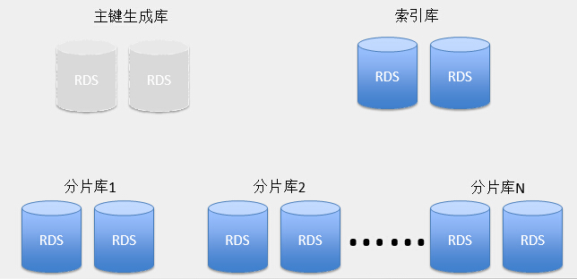

支持分布式部署
基于Dubbo构建的分布式环境可以方便的实现负载均衡，服务治理，热部署等功能。
了解更多 »
支持MySQL及其它数据库的数据分片
通过简单的分片算法，可以实现数据库的横向扩展（同时支持JTA）；支持在线数据迁移；基于Apache Zookeeper的配置中心可以实现在线修改数据源的功能（通过配置中心工具）。

了解更多关于Apache Zookeeper »
对其它工具的支持
新在线框架对其它工具也有良好的支持，你可以毫不费力的从代码中调用Rides、Memcached、ElasticSearch、JMS、NoSQL数据库。
了解使用方法 »